토목산업기사 (2020-06-06 기출문제)
1과목: 응용역학
1. 아래 그림과 같은 단순보에서 최대 처짐은? (단, EI는 일정하다.)
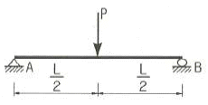
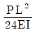
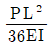
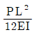
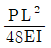
(정답률: 71%)

2. 지름이 D인 원목을 직사각형 단면으로 제재하고자 한다. 휨모멘트에 대한 저항을 크게 하기 위해 최대 단면계수를 갖는 직사각형 단면을 얻으려면 적당한 폭 b는?
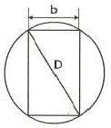
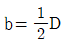
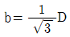
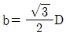
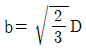
(정답률: 66%)
3. 아래 그림에서 지점 C의 반력이 영(零)이 되기 위해 B점에 작용시킬 집중하중 (P)의 크기는?
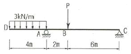
- 8kN
- 10kN
- 12kN
- 14kN
(정답률: 74%)
4. 정사각형(한 변의 길이 h)의 균일한 단면을 가진 길이 L의 기둥이 견딜 수 있는 축방향 하중을 P로 할 때 다음 중 옳은 것은? (단, EI는 일정하다.)
- P는 E에 비례, h3에 비례, L에 반비례한다.
- P는 E에 비례, h4에 비례, L2에 비례한다.
- P는 E에 비례, h4에 비례, L에 비례한다.
- P는 E에 비례, h4에 비례, L2에 반비례한다.
(정답률: 62%)
5. 지름이 6cm, 길이가 100cm의 둥근막대가 인장력을 받아서 0.5cm 늘어나고 동시에 지름이 0.006cm 만큼 줄었을 때 이 재료의 푸아송 비(ν)는?
- 0.2
- 0.5
- 2.0
- 5.0
(정답률: 66%)
6. 아래 그림에서 단면적이 A인 임의의 부재단면이 있다. 도심축으로부터 y1 떨어진 축을 기준으로 한 단면 2차 모멘트의 크기가 Ix1일 때, 도심축으로부터 3y1 떨어진 축을 기준으로 한 단면 2차 모멘트의 크기는?
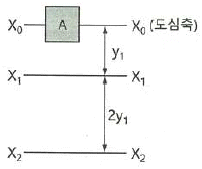
- Ix1+2Ay12
- Ix1+3Ay12
- Ix1+4Ay12
- Ix1+8Ay12
(정답률: 45%)
7. 다음 트러스에서 경사재인 A부재의 부재력은?
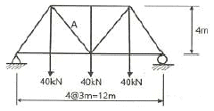
- 25kN(압축)
- 25kN(인장)
- 20kN(압축)
- 20kN(인장)
(정답률: 61%)
8. 그림과 같은 단순보의 B지점에 모멘트가 50kN·m가 작용할 때 C점의 휨모멘트는?
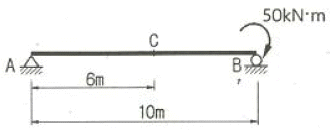
- -20kN·m
- +20kN·m
- -30kN·m
- +30kN·m
(정답률: 70%)
9. 다음 3힌지 아치에서 B점의 수평반력은?
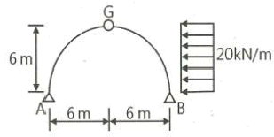
- 50kN(→)
- 70kN(←)
- 90kN(→)
- 110kN(←)
(정답률: 54%)
10. 그림과 같은 단면에서 직사각형 단면의 최대 전단응력은 원형단면의 최대 전단응력의 몇 배인가? (단, 두 단면적과 작용하는 전단력의 크기는 동일하다.)
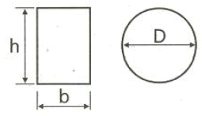
- 5/6배
- 7/6배
- 8/7배
- 9/8배
(정답률: 59%)
11. 지름 D인 원형 단면보에 휨모멘트 M이 작용할 때 최대 휨응력은?
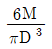
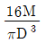
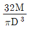
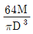
(정답률: 67%)
12. 그림에서 C점에 얼마의 힘(P)으로 당겼더니 부재 BC에 200kN의 장력이 발생하였다면 AC에 발생하는 장력은?
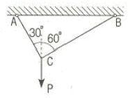
- 86.6kN
- 115.5kN
- 346.4kN
- 400.0kN
(정답률: 61%)
13. 다음과 같은 단순보에서 최대 휨응력은? (단, 단면은 폭 300mm, 높이 400mm의 직사각형이다.)
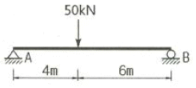
- 15MPa
- 18MPa
- 22MPa
- 26MPa
(정답률: 56%)
14. “여러 힘이 작용할 때 임의의 한 점에 대한 모멘트의 합은 그 점에 대한 합력의 모멘트와 같다.”라는 것은 무슨 정리인가?
- Lami의 정리
- Castigliano의 정리
- Varignon의 정리
- Mohr의 정리
(정답률: 73%)
15. 그림과 같은 단면 도형의 x, y축에 대한 단면 상승 모멘트 (Ixy)는?
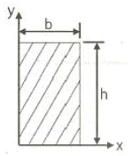
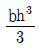
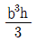
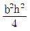
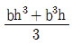
(정답률: 57%)
16. 아래 그림에서 A점으로부터 합력(R)의 작용위치(C점)까지의 거리(x)는?
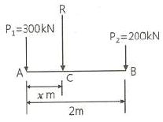
- 0.8m
- 0.6m
- 0.4m
- 0.2m
(정답률: 49%)
17. 어떤 재료의 탄성 계수(E)가 210000MPa, 푸아송 비(v)가 0.25, 전단변형율(r)이 0.1 이라면 전단응력(τ)은?
- 8400MPa
- 4200MPa
- 2400MPa
- 1680MPa
(정답률: 58%)
18. 지간이 8m, 높이가 300mm, 폭이 200mm인 단면을 갖는 단순보에 등분포 하중(w)이 4kN/m가 만재하여 있을 때 최대 처짐은? (단, 탄성계수(E)는 10000MPa이다.)
- 47.4mm
- 21.0mm
- 9.0mm
- 0.09mm
(정답률: 40%)
19. 반지름 r인 원형단면의 단주에서 핵 반경 e는?
- r/2
- r/3
- r/4
- r/5
(정답률: 72%)
20. 단순보에 아래 그림과 같이 집중하중 P와 등분포하중 w가 작용할 때 중앙점에서의 휨모멘트는?
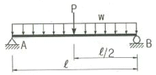
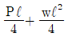
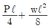
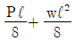
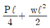
(정답률: 70%)
2과목: 측량학
21. 초점길이가 210mm인 카메라를 사용하여 비고 600m인 지점을 사진축척 1:20000으로 촬영한 수직 사진의 촬영고도는?
- 1200m
- 2400m
- 3600m
- 4800m
(정답률: 54%)
22. 수준측량의 오차 최소화 방법으로 틀린 것은?
- 표척의 영점오차는 기계의 설치 횟수를 짝수로 세워 오차를 최소화 한다.
- 시차는 망원경의 접안경 및 대물경을 명확히 조절한다.
- 눈금오차는 기준자와 비교하여 보정값을 정하고 온도에 대한 온도보정도 실시한다.
- 표척 기울기에 대한 오차는 표척을 앞뒤로 흔들 때의 최대값을 읽음으로 최소화 한다.
(정답률: 60%)
23. 매개변수(A)가 90m인 클로소이드 곡선에서 곡선길이 (L)가 30m일 때 곡선의 반지름(R)은?
- 120m
- 150m
- 270m
- 300m
(정답률: 67%)
24. 30m 줄자의 길이를 표준자와 비교하여 검증하였더니 30.03m이었다면 이 줄자를 사용하여 관측 후 계산한 면적의 정밀도는?
- 1/50
- 1/100
- 1/500
- 1/1000
(정답률: 41%)
25. 원곡선의 설치에서 교각이 35°, 원곡선 반지름이 500m일 때 도로 기점으로부터 곡선시점까지의 거리가 315.45m이면 도로 기점으로부터 곡선종점 까지의 거리는?
- 593.38m
- 596.88m
- 620.88m
- 625.36m
(정답률: 51%)
26. 어느 측선의 방위가 S60˚W이고，측선길이가 200m일 때 경거는?
- 173.2m
- 100m
- -100m
- -173.20m
(정답률: 54%)
27. 측선 AB를 기준으로 하여 C방향의 협각을 관측하였더니 257°36′37″이었다. 그런데 B점에 편위가 있어 그림과 같이 실제 관측한 점이 B′이었다면 정확한 협각은? (단，BB′=20cm, ∠B′BA=150°, AB′=2km)
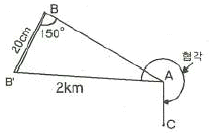
- 257°36′17″
- 257°36′27″
- 257°36′37″
- 257°36′47″
(정답률: 46%)
28. 폐합 트래버스측량을 실시하여 각 측선의 경거, 위거를 계산한 결과, 측선34의 자료가 없었다. 측선34의 방위각은? (단, 폐합오차는 없는 것으로 가정한다.)(오류 신고가 접수된 문제입니다. 반드시 정답과 해설을 확인하시기 바랍니다.)
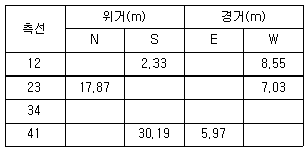
- 64°10′44″
- 33°15′50″
- 244°10′44″
- 115°49′14″
(정답률: 43%)
29. 갑, 을 두 사람이 A, B 두 점간의 고저차를 구하기 위하여 왕복 수준 즉량한 결과가 갑은 38.994m±0.008m, 을은 39.003m±0.004m 일 때，두 점간 고저차의 최확값은?
- 38.995m
- 38.999m
- 39.001m
- 39.003m
(정답률: 47%)
30. 수심 H인 하천에서 수면으로부터 수심이 0.2H, 0.4H, 0.6H, 0.8H인 지점의 유속이 각각 0.562m/s, 0.497m/s, 0.429m/s, 0.364m/s 일 때 평균유속을 구한 것이 0.463m/s이었다면 평균유속을 구한 방법으로 옳은 것은?
- 1점법
- 2점법
- 3점법
- 4점법
(정답률: 51%)
31. 노선측량에서 노선선정을 할 때 가장 중요한 요소는?
- 곡선의 대소(大小)
- 수송량 및 경제성
- 곡선설치의 난이도
- 공사기일
(정답률: 62%)
32. 50m에 대해 20mm 늘어나 있는 줄자로 정사각형의 토지를 측량한 결과, 면적이 62500m2이었다면 실제 면적은?
- 62450m2
- 62475m2
- 62525m2
- 62550m2
(정답률: 46%)
33. 하천의 종단측량에서 4km 왕복측량에 대한 허용오차가 C라고 하면 8km 왕복측량의 허용오차는?
- C/2
- √2 C
- 2C
- 4C
(정답률: 46%)
34. 삼각점을 선점할 때의 유의사항에 대한 설명으로 틀린 것은?
- 정삼각형에 가깝도록 할 것
- 영구 보존할 수 있는 지점을 택할 것
- 지반은 가급적 연약한 곳으로 선정할 것
- 후속작업에 편리한 지점일 것
(정답률: 70%)
35. 측량결과 그림과 같은 지역의 면적은?
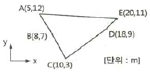
- 66m2
- 80m2
- 132m2
- 160m2
(정답률: 46%)
36. 삼각점으로부터 출발하여 다른 삼각점에 결합시키는 형태로써 측량결과의 검사가 가능하며 높은 정확도의 다각측량이 가능한 트래버스의 형태는?
- 결합 트래버스
- 개방 트래버스
- 폐합 트래버스
- 기지 트래버스
(정답률: 64%)
37. 최소 제곱법의 원리를 이용하여 처리할 수 있는 오차는?
- 정오차
- 우연오차
- 착오
- 물리적 오차
(정답률: 50%)
38. 지형을 보다 자세하게 표현하기 위해 다양한 크기의 삼각망을 이용하여 수치지형을 표현하는 모델은?
- TIN
- DEM
- DSM
- DTM
(정답률: 45%)
39. 경사가 일정한 경사지에서 두 점간의 경사거리를 관측하여 150m를 얻었다. 두 점간의 고저차가 20m이었다면 수평거리는?
- 148.3m
- 148.5m
- 148.7m
- 148.9m
(정답률: 44%)
40. 그림과 같이 원곡선을 설치할 때 교점(P)에 장애물이 있어 ∠ACD=150°, ∠CDB=90° 및 CD의 거리 400m를 관측하였다. C점으로부터 곡선시점(A)까지의 거리는?(단, 곡선의 반지름은 500m이다.)
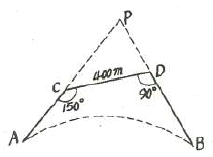
- 404.15m
- 425.88m
- 453.15m
- 461.88m
(정답률: 52%)
3과목: 수리학
41. 동수경사선에 관한 설명으로 옳지 않은 것은?
- 항상 에너지선과 평행하다.
- 개수로 수면이 동수경사선이 된다.
- 에너지선보다 속도수두만큼 아래에 있다.
- 압력수두와 위치수두의 합을 연결한 선이다.
(정답률: 54%)
42. 관의 단면적이 4m2인 관수로에서 물이 정지하고 있을 때 압력을 측정하니 500kPa이었고 물을 흐르게 했을 때 압력을 측정하니 420kPa이었다면, 이 때 유속(V)은? (단, 물의 단위중량은 9.81 kN/m3이다.)
- 10.⑤m/s
- 11.16m/s
- 12.65m/s
- 15.22m/s
(정답률: 45%)
43. 원통형의 용기에 깊이 1.5m까지는 비중이 1.35인 액체를 넣고 그 위에 2.5m의 깊이로 비중이 0.95인 액체를 넣었을 때, 밑바닥이 받는 총 압력은? (단, 물의 단위중량은 9.81kN/m3이며, 밑바닥의 지름은 2m이다.)
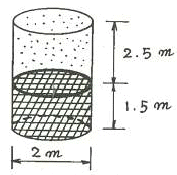
- 125.5kN
- 135.6kN
- 145.5kN
- 155.6kN
(정답률: 38%)
44. 경심에 대한 설명으로 옳은 것은?
- 물이 흐르는 수로
- 물이 차서 흐르는 횡단면적
- 유수단면적을 윤변으로 나눈 값
- 횡단면적과 물이 접촉하는 수로벽면 및 바닥길이
(정답률: 54%)
45. 관망 문제해석에서 손실수두를 유량의 함수로 표시하여 사용할 경우 지름 D인 원형단면관에 대하여 hL=kQ2으로 표시할 수 있다. 관의 특성 제원에 따라 결정되는 상수 k의 값은? (단, f는 마찰손실계수, L은 관의 길이이며 다른 손실은 무시한다.）
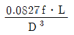
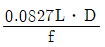
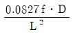
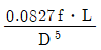
(정답률: 52%)
46. 수면경사가 1/500인 직사각형 수로에 유량이 50m3/s로 흐를 때 수리상 유리 한 단면의 수심(h)은? (단, Manning 공식을 이용하며, n=0.023)
- 0.8m
- 1.1m
- 2.0m
- 3.1m
(정답률: 38%)
47. 지름 7cm의 연직관에 높이 lm만큼 모래를 넣었다. 이 모래위에 물을 20cm만큼 일정하게 유지하여 투수량(透水量) Q=5.0L/h를 얻었다. 모래의 투수계수(k)를 구한 값은?
- 6.495m/h
- 649.5m/h
- 1.083m/h
- 108.3m/h
(정답률: 35%)
48. 위어에 있어서 수맥의 수축에 대한 일반적인 설명으로 옳지 않은 것은?
- 정수축은 광정위어에서 생기는 수축현상이다.
- 연직수축이란 면수축과 정수축을 합한 것이다.
- 단수축은 위어의 측벽에 의해 월류폭이 수축하는 현상이다.
- 면수축은 물의 위치에너지가 운동에너지로 변화하기 때문에 생긴다.
(정답률: 37%)
49. 폭 20m인 직사각형 단면수로에 30.6m3/s의 유량이 0.8m의 수심으로 흐를 때 Froude 수(㉠)와 흐름 상태(㉡)는?
- ㉠ : 0.683, ㉡ : 상류
- ㉠ : 0.683, ㉡ : 사류
- ㉠ : 1.464, ㉡ : 상류
- ㉠ : 1.464, ㉡ : 사류
(정답률: 57%)
50. Darcy의 법칙을 층류에만 적용하여야 하는 이유는?
- 레이놀즈수가 크기 때문이다.
- 투수계수의 물리적 특성 때문이다.
- 유속과 손실수두가 비례하기 때문이다.
- 지하수 흐름은 항상 층류이기 때문이다.
(정답률: 48%)
51. 물이 흐르고 있는 벤추리미터(Venturi meter)의 관부와 수축부에 수은을 넣은 U자형 액주계를 연결하여 수은주의 높이차 hm=10cm를 읽었다. 관부와 수축부의 압력수두의 차는? (단，수은의 비중은 13.6이다.)
- 1.26m
- 1.36m
- 12.35m
- 13.35m
(정답률: 33%)
52. 모세관 현상에 대한 설명으로 옳지 않은 것은?
- 모세관의 상승높이는 액체의 단위중량에 비례한다.
- 모세관의 상승높이는 모세관의 지름에 반비례한다.
- 모세관의 상승여부는 액체의 응집력과 액체와 관 벽의 부착력에 의해 좌우된다.
- 액체의 응집력이 관 벽과의 부착력보다 크면 관 내액체의 높이는 관 밖보다 낮아진다.
(정답률: 49%)
53. 밑면적 A, 높이 H인 원주형 물체의 흘수가 h라면 물체의 단위중량 ωm은? (단, 물의 단위중량은 ω0이다.)
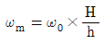
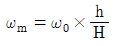
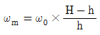
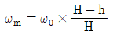
(정답률: 46%)
54. 한계 수심에 관한 설명으로 옳은 것은?
- 유량이 최소이다.
- 비에너지가 최소이다.
- Reynolds 수가 1이다.
- Froude 수가 1보다 크다.
(정답률: 54%)
55. 물의 성질에 대한 설명으로 옳지 않은 것은?
- 물의 점성계수는 수온이 높을수록 그 값이 커진다.
- 공기에 접촉하는 물의 표면장력은 온도가 상승하면 감소한다.
- 내부마찰력이 큰 것은 내부마찰력이 작은 것보다 그 점성계수의 값이 크다.
- 압력이 증가하면 물의 압축계수(CW)는 감소하고 체적탄성계수(EW)는 증가한다.
(정답률: 49%)
56. 개수로 내의 한 단면에 있어서 평균유속을 V, 수심을 h라 할 때, 비에너지를 표시한 것은?
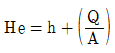
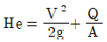
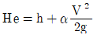
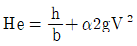
(정답률: 48%)
57. 수두(水頭)가 2m인 오리피스에서의 유량은? (단, 오리피스의 지름 10cm, 유량계수 0.76)
- 0.017m3/s
- 0.027m3/s
- 0.037m3/s
- 0.047m3/s
(정답률: 42%)
58. 단위시간에 있어서 속도변화가 V1에서 V2로 되며 이 때 질량 m인 유체의 밀도를 ρ라 할 때 운동량 방정식은? (단, Q : 유량, ω : 유체의 단위중량, g : 중력가속도)
(정답률: 47%)
59. 다음 중 베르누이의 정리를 응용한 것이 아닌 것은?
- Pitot tube
- Venturimeter
- Pascal 의 원리
- Torricelli의 정리
(정답률: 43%)
60. 어느 하천에서 Hm 되는 곳까지 양수하려고 한다. 양수량을 Q(m3/sec), 모든 손실수두의 합을 ∑he, 펌프와 모터의 효율을 각각 η1, η2라 할 때, 펌프의 동력을 구하는 식은?
(정답률: 48%)
4과목: 철근콘크리트 및 강구조
61. b=300mm, d=500mm인 단철근 직사각형 보에서 균형철근비(pb)가 0.0285일 때, 이 보를 균형철근비로 설계한다면 철근량(As)은?
- 2820mm2
- 3210mm2
- 4225mm2
- 4275mm2
(정답률: 47%)
62. 프리스트레스트 콘크리트에서 콘크리트의 건조수축변형률이 19×10-5일 때 긴장재 인장응력의 감소량은? (단, 긴장재의 탄성계수는 2.0×105MPa이다.)
- 38MPa
- 41MPa
- 42MPa
- 45MPa
(정답률: 42%)
63. Mu = 170kN·m의 계수모멘트를 받는 단철근 직사각형 보에서 필요한 철근량(As)은 약 얼마인가? (단, 보의 폭은 300m, 유효깊이는 450mm, fck=28 MPa, fy=400MPa이고, ø=0.85를 적용한다.)
- 1100mm2
- 1200mm2
- 1300mm2
- 1400mm2
(정답률: 34%)
64. 강도설계법에서 사용되는 강도감소계수에 대한 설명으로 틀린 것은?
- 인장지배단면에 대한 강도감소계수는 0.85이다.
- 전단력에 대한 강도감소계수는 0.75 이다.
- 무근콘크리트의 휨모멘트에 대한 강도감소계수는 0.55이다.
- 압축지배단면 중 나선철근으로 보강된 철근콘크리트 부재의 강도 감소계수는 0.65이다.
(정답률: 51%)
65. 그림과 같은 리벳 이음에서 허용 전단응력이 70MPa이고, 허용 지압응력이 150MPa일 때 이 리벳의 강도는? (단, 리벳 지름(d)은 22mm, 철판 두께(t)는 12mm이다.)
- 26.6kN
- 30.4kN
- 39.6kN
- 42.2kN
(정답률: 41%)
66. 강도설계법에서 설계기준압축강도(fck)가 35MPa인 경우 계수 β1의 값은? (단, 등가직사각형 응력블록의 깊이 a=β1c이다.)
- 0.795
- 0.801
- 0.823
- 0.850
(정답률: 56%)
67. 처짐을 계산하지 않는 경우 단순 지지로 길이 ℓ인 1방향 슬래브의 최소 두께 (h)로 옳은 것은? (단, 보통콘크리트(mc=2300kg/m3)와 설계기준항복 강도 400MPa의 철근을 사용한 부재이다.)
- ℓ/20
- ℓ/24
- ℓ/28
- ℓ/34
(정답률: 49%)
68. 아래 그림과 같은 강도설계법에 의해 설계된 복철근보에서 콘크리트의 최대변형률이 0.003에 도달했을 때 압축철근이 항복하는 경우의 변형률(εs′)은?
- 0.85×0.003
- 1/3×0.003
(정답률: 50%)
69. 전단철근에 대한 설명으로 틀린 것은?
- 철근콘크리트 부재의 경우 주인장 철근에 45° 이상의 각도로 설치되는 스트럽을 전단철근으로 사용할 수 있다.
- 철근콘크리트 부재의 경우 주인장 철근에 30° 이상의 각도로 구부린 굽힘철근을 전단철근으로 사농할 수 있다.
- 전단철근의 설계기준항복강도는 500MPa를 초과할 수 없다.
- 전단철근으로 사용하는 스터럽과 기타 철근 또는 철선은 콘크리트 압축연단부터 거리 d/2 만큼 연장하여야 한다.
(정답률: 42%)
70. PS강재에 요구되는 일반적인 성질로 틀린 것은?
- 인장강도가 클 것
- 릴랙세이션이 작을 것
- 늘음과 인성이 없을 것
- 응력부식에 대한 저항성이 클 것
(정답률: 56%)
71. 프리스트레스트 콘크리트 부재의 제작과정 중 프리텐션 공법에서 필요하지 않는 것은?
- 콘크리트 치기 작업
- PS강재에 인장력을 주는 작업
- PS강재에 준 인장력을 콘크리트 부재에 전달시키는 작업
- PS강재와 콘크리트를 부착시키는 그라우팅 작업
(정답률: 45%)
72. 아래 그림과 같은 맞대기 용접의 용접부에 생기는 인장응력은?
- 141 MPa
- 180 MPa
- 200 MPa
- 223 MPa
(정답률: 54%)
73. 옹벽의 안정조건에 대한 설명으로 틀린 것은?
- 활동에 대한 저항력은 옹벽에 작용하는 수평력의 1.5배 이상이어야 한다.
- 지반에 유발되는 최대 지반반력이 지반의 허용지지력의 1.5배 이상이어야 한다.
- 전도에 대한 저항휨모멘트는 횡토압에 의한 전도휨모멘트의 2.0배 이상이어야 한다.
- 전두 및 지반지지력에 대한 안정조건은 만족하지만, 활동에 대한 안정조건만을 만족하지 못할 경우에는 활동방지벽 혹은 횡방향 앵커 등을 설치하여 활동저항력을 증대시킬 수 있다.
(정답률: 39%)
74. 상부철근(정착길이 아래 300mm를 초과되게 굳지 않은 콘크리트를 친 수평철근)으로 사용되는 인장 이형철근의 정착길이를 구하려고 한다. fck=21MPa, fy=300MPa을 사용한다면 상부철근으로서의 보정계수만을 사용할 때 정착길이는 얼마 이상이어야 하는가? (단, D29 철근으로 공칭지름은 28.6 mm, 공칭단면 적은 642mm2이고, 보통중량콘크리트이다.）
- 1461mm
- 1123mm
- 987mm
- 865mm
(정답률: 39%)
75. 최소철근량 보다 많고 균형철근량 보다 적은 인장철근량을 가진 철근콘크리트 보가 휨에 의해 파괴되는 경우에 대한 설명으로 옳은 것은?
- 연성파괴를 한다.
- 취성파괴를 한다.
- 사용철근량이 균형철근량 보다 적은 경우는 보로서 의미가 없다.
- 중립축이 인장 측으로 내려오면서 철근이 먼저 항복한다.
(정답률: 48%)
76. 보통중량골재를 사용한 콘크리트의 단위질량을 2300kg/m3으로 할 때 콘크리트의 탄성계수를 구하는 식은? (단, fcu : 재령 28일에서 콘크리트의 평균압축강도이다.)
(정답률: 47%)
77. 철근콘크리트가 하나의 구조체로서 성립하는 이유로서 틀린 것은?
- 콘크리트 속에 묻힌 철근은 녹슬지 않는다.
- 철근과 콘크리트 사이의 부착강도가 크다.
- 철근과 콘크리트의 열에 대한 팽창계수는 거의 비슷하다.
- 철근과 콘크리트의 탄성계수는 거의 비슷하다.
(정답률: 50%)
78. 깊은보(Deep beam)에 대한 설명으로 옳은 것은?
- 순경간(ℓn)이 부재 깊이의 3배 이하이거나 하중이 받침부로부터 부재 깊이의 3배 거리 이내에 작용하는 보
- 순경간((ℓn)이 부재 깊이의 4배 이하이거나 하중이 받침부로부터 부재 깊이의 2배 거리 이내에 작용하는 보
- 순경간((ℓn)이 부재 깊이의 5배 이하이거나 하중이 받침부로부터 부재 깊이의 4배 거리 이내에 작용하는 보
- 순경간((ℓn)이 부재 깊이의 6배 이하이거나 하중이 받침부로부터 부재 깊이의 3배 거리 이내에 작용하는 보
(정답률: 53%)
79. 강도설계법에서 콘크리트가 부담하는 공칭전단강도를 구하는 식은? (단, 전단력과 휨모멘트만을 받는 부재이다.)
(정답률: 56%)
80. 아래 그림과 같은 판형에서 스티프너(stiffener)의 주된 사용목적은?
- web plate의 좌굴을 방지하기 위하여
- flange angle의 간격을 넓게 하기 위하여
- flange의 강성을 보강하기 위하여
- 보 전체의 비틀림에 대한 강도를 크게 하기 위하여
(정답률: 54%)
5과목: 토질 및 기초
81. 그림에서 분사현상에 대한 안전율은 얼마인가? (단, 모래의 비중은 2.65, 간극비는 0.6이다.)
- 1.01
- 1.55
- 1.86
- 2.44
(정답률: 42%)
82. 흙 속에서의 물의 흐름 중 연직유효응력의 증가를 가져오는 것은?
- 정수압상태
- 상향흐름
- 하향흐름
- 수평흐름
(정답률: 46%)
83. 아래 기호를 아용하여 현장밀도시험의 결과로부터 건조밀도(ρd)를 구하는 식으로 옳은 것은?
(정답률: 37%)
84. 채취된 시료의 교란정도는 면적비를 계산하여 통상 면적비가 몇 % 보다 작으면 여잉토의 혼입이 불가능한 것으로 보고 흐트러지지 않는 시료로 간주하는가?
- 10%
- 13%
- 15%
- 20%
(정답률: 42%)
85. 점토 덩어리는 재차 물을 흡수하면 고체 - 반고체 -소성 - 액성의 단계를 거치지 않고 물을 흡착함과 동시에 흙 입자 간의 결합력이 감소되어 액성상태로 붕괴한다. 이러한 현상을 무엇이라 하는가?
- 비화작용(Slaking)
- 팽창작용(Bulking)
- 수화작용(Hydration)
- 윤활작용(Lubrication)
(정답률: 39%)
86. Sand Drain 공법에서 Uv(연직방향의 압밀도)=0.9, Uh(수평방향의 압밀도)=0.15인 경우, 수직 및 수평방향을 고려한 압밀도(Uvh)는 얼마인가?
- 99.15%
- 96.85%
- 94.5%
- 91.5%
(정답률: 40%)
87. 평균 기온에 따른 동결지수가 520°C · days였다. 이 지방의 정수(C)가 4일 때 동결깊이는? (단, 데라다 공식을 이용한다.)
- 130.2cm
- 102.4cm
- 91.2cm
- 22.8cm
(정답률: 44%)
88. 비교란 점토(ø=0)에 대한 일축압축강도(qu)가 36kN/m2이고 이 흙을 되비빔을 했을 때의 일축압축강도(qur)가 12kN/m2이었다. 이 흙의 점착력(cu)과 예민비(St)는얼마인가?
- cu=24kN/m2, St=0.3
- cu=24kN/m2, St=3.0
- cu=18kN/m2, St=0.3
- cu=18kN/m2, St=3.0
(정답률: 47%)
89. 다음 기초의 형식 중 얕은 기초인 것은?
- 확대기초
- 우물통 기초
- 공기 케이슨 기초
- 철근콘크리트 말뚝기초
(정답률: 53%)
90. 절편법에 의한 사면의 안정해석 시 가장 먼저 결정되어야 할 사항은?
- 절편의 중량
- 가상파괴 활동면
- 활동면상의 점착력
- 활동면상의 내부마찰각
(정답률: 52%)
91. 말뚝기초의 지지력에 관한 설명으로 틀린 것은?
- 부마찰력은 아래 방향으로 작용한다.
- 말뚝선단부의 지지력과 말뚝주변 마찰력의 합이 말뚝의 지지력이 된다.
- 점성토 지반에는 동역학적 지지력 공식이 잘 맞는다.
- 재하시험 결과를 이용하는 것이 신뢰도가 큰 편이다.
(정답률: 43%)
92. 10개의 무리 말뚝기초에 있어서 효율이 0.8, 단항으로 계산한 말뚝 1개의 허용지지력이 100kN일 때 군항의 허용지지력은?
- 500kN
- 800kN
- 1000kN
- 1250kN
(정답률: 49%)
93. 수직 응력이 60 kN/m2 이고 흙의 내부 마찰각이 45˚일 때 모래의 전단강도는? (단，점착력 (c)은 0이다.)
- 24kN/m2
- 36kN/m2
- 48kN/m2
- 60kN/m2
(정답률: 45%)
94. 풍화작용에 의하여 분해되어 원 위치에서 이동하지 않고 모암의 광물질을 덮고 있는 상태의 흙은?
- 호성토(Lacustrine soil)
- 충적토(Alluvial soil)
- 빙적토(Glacial soil)
- 잔적토(Residual soil)
(정답률: 50%)
95. 아래 그림의 투수층에서 피에조미터를 꽂은 두 지점 사이의 동수경사(i)는 얼마인가? (단, 두 지점간의 수평거리는 50m 이다.)
- 0.063
- 0.079
- 0.126
- 0.162
(정답률: 43%)
96. 가로 2m, 세로 4m의 직사각형 케이슨이 지중 16m까지 관입되었다. 단위면적당 마찰력 f=0.2kN/m2 일 때 케이슨에 작용하는 주면마찰력(skin friction)은 얼마인가?
- 38.4 kN
- 27.5 kN
- 19.2 kN
- 12.8 kN
(정답률: 27%)
97. 실내다짐시험 결과 최대건조단위중량이 15.6 kN/m3이고, 다짐도가 95%일 때 현장의 건조단위중량은 얼마인가?
- 13.62 kN/m3
- 14.82kN/m3
- 16.01kN/m3
- 17.43kN/m3
(정답률: 50%)
98. 주동토압계수를 Ka, 수동토압계수를 Kp, 정지토압계수를 Ko라 할 때 토압계수 크기의 비교로 옳은 것은?
- Ko > Kp > Ka
- Ko > Ka > Kp
- Kp > Ko > Ka
- Ka > Ko > Kp
(정답률: 57%)
99. 홁의 다짐에 대한 설명으로 틀린 것은?
- 건조밀도-함수비 곡선에서 최적함수비와 최대건조밀도를 구할 수 있다.
- 사질토는 점성토에 비해 흙의 건조밀도-함수비 곡선의 경사가 완만하다.
- 최대건조밀도는 사질토일수록 크고, 점성토일수록 작다.
- 모래질 흙은 진동 또는 진동을 동반하는 다짐방법이 유효하다.
(정답률: 38%)
100. 포화점토의 비압밀 비배수 시험에 대한 설명으로 틀린 것은?
- 시공 직후의 안정 해석에 적용된다.
- 구속압력을 증대시키면 유효응력은 커진다.
- 구속압력을 증대한 만큼 간극수압은 증대한다.
- 구속압력의 크기에 관계없이 전단강도는 일정하다.
(정답률: 28%)
6과목: 상하수도공학
101. 상수 원수의 수질을 검사한 결과가 다음과 같을 때, 경도 (hardness)를 CaCO3 농도로 표시하면 몇 mg/L인가? (단, 분자량은 Ca： 40, Cl： 35.5, HCO3 : 61, Mg： 24, Na： 23, SO4 : 96, CaCO3 : 100)
- 336.7mg/L
- 340.1mg/L
- 352.5mg/L
- 370.4mg/L
(정답률: 34%)
102. 우수조정지를 설치하는 목적으로 옳지 않은 것은?
- 유달시간의 증대
- 유출계수의 증대
- 첨두유량의 감소
- 시가지의 침수방지
(정답률: 41%)
103. 다음의 소독방법 중 발암물질인 THM 발생 가능성이 가장 높은 것은?
- 염소소독
- 오존소독
- 자외선소독
- 이산화염소소독
(정답률: 51%)
104. 관로의 접합방법에 관한 설명으로 옳지 않은 것은?
- 관정접합 : 유수는 원활한 흐름이 되지만 굴착깊이가 증가되어 공사비가 증대된다.
- 관중심접합 : 수면접합과 관저접합의 중간적인 방법이나 보통 수면접합에 준용된다.
- 수면접합 : 수리학적으로 대개 계획수위를 일치시켜 접합시키는 것으로서 양호한 방법이다.
- 관저접합 : 수위상승을 방지하고 양정고를 줄일 수 있으나 굴착깊이가 증가되어 공사비가 증대된다.
(정답률: 43%)
1⑤. 수두 60m의 수압을 가진 수압관의 내경이 1000mm일 때, 강관의 최소 두께는? (단, 관의 허용응력 σta=1300kgf/cm2이다.)
- 0.12cm
- 0.15cm
- 0.23cm
- 0.30cm
(정답률: 36%)
106. 하수처리 과정 중 3차 처리의 주 제거 대상이 되는 것은?
- 발암물질
- 부유물질
- 영양염류
- 유기물질
(정답률: 44%)
107. 하수도계획의 자연적 조건에 관한 조사 중 하천 및 수계현황에 관하여 조사하여야 하는 사항에 포함되는 것은?
- 지질도
- 지형도
- 지하수위와 지반침하상황
- 하천 및 수로의 종 · 횡단면도
(정답률: 44%)
108. 염소요구량(A), 필요 잔류염소량(B), 염소주입량(C)과의 관계로 옳은 것은?
- A = B + C
- C = A + B
- A = B - C
- C = A × B
(정답률: 54%)
109. 찌꺼기(슬러지)처리에 관한 일반적인 내용으로 옳지 않은 것은?
- 호기성 소화는 찌꺼기(슬러지)의 소화방법이 아니다.
- 하수 찌꺼기(슬러지)는 매우 높은 함수율과 부패성을 갖고 있다.
- 찌꺼기(슬러지)의 기계탈수 종류로는 가압탈수기, 원심탈수기, 벨트프레스 탈수기 등이 있다.
- 찌꺼기(슬러지)의 농축은 찌꺼기(슬러지)의 부피 감소 과정으로 찌꺼기(슬러지) 소화의 전단계 공정이다.
(정답률: 45%)
110. 계획1일평균급수량이 400L, 시간최대급수량이 25L일 때 계획1일최대급수량이 500L라면 계획 첨두율은?
- 1.2
- 1.25
- 1.50
- 20.0
(정답률: 45%)
111. 오수관로 설계 시 계획시간최대오수량에 대한 최소유속(㉠)과 최대유속(㉡)으로 옳은 것은?
- ㉠ : 0.1m/s, ㉡ : 0.5m/s
- ㉠ : 0.6m/s, ㉡ : 0.8m/s
- ㉠ : 0.1m/s, ㉡ : 1.0m/s
- ㉠ : 0.6m/s, ㉡ : 3.0m/s
(정답률: 54%)
112. 다음과 같은 수질을 가진 공장폐수를 생물학적 처리 중심으로 처리하는 경우 어떤 순서로 조합하는 것이 가장 적정한가?
- 중화 → 침전 → 생물학적 처리
- 침전 → 생물학적 처리 → 중화
- Screening → 생물학적 처리 → 침전
- 생물학적 처리 → Screening → 중화
(정답률: 42%)
113. 송수관로를 계획할 때에 고려 사항에 대한 설명으로 옳지 않은 것은?
- 가급적 단거리가 되어야 한다.
- 이상수압을 받지 않도록 한다.
- 송수방식은 반드시 자연유하식으로 해야 한다.
- 관로의 수평 및 연직방향의 급격한 굴곡은 피한다.
(정답률: 53%)
114. 취수장에서부터 가정에 이르는 상수도계통을 올바르게 나열한 것은?
- 취수시설 → 정수시설 → 도수시설 → 송수시설 → 배수시설 → 급수시설
- 취수시설 → 도수시설 → 송수시설 → 정수시설 → 배수시설 → 급수시설
- 취수시설 → 도수시설 → 정수시설 → 송수시설 → 배수시설 → 급수시설
- 취수시설 → 도수시설 → 송수시설 → 배수시설 → 정수시설 → 급수시설
(정답률: 55%)
115. 가정하수, 공장폐수 및 우수를 혼합해서 수송하는 하수관로는?
- 우수관로(storm sewer)
- 가정하수관로(sanitary sewer)
- 분류식 하수관로(separate sewer)
- 합류식 하수관로(combined sewer)
(정답률: 51%)
116. 송수시설의 계획송수량의 원칙적 기준이 되는 것은?
- 계획1일평균급수량
- 계획1일최대급수량
- 계획시간평균급수량
- 계획시간최대급수량
(정답률: 52%)
117. 하수도시설의 계획우수량 산정 시 고려사항 및 이에 대한 설명으로 옳은 것은?
- 도달시간: 유입시간과 유하시간을 합한 것이다.
- 우수유출량의 산정식: Hazen-Williams 식에 의한다.
- 확률년수: 원칙적으로 20년을 원칙으로 하되, 이를 넘지 않도록 한다.
- 하상계수: 토지이용도별 기초계수로 지역의 총괄계수를 구하는 것이 원칙이다.
(정답률: 40%)
118. 수원의 구비조건으로 옳지 않은 것은?
- 수질이 양호해야 한다.
- 최대갈수기에도 계획수량의 확보가 가능해야 한다.
- 오염 회피를 위하여 도심에서 멀리 떨어진 곳일수록 좋다.
- 수리권의 획득이 용이하고, 건설비 및 유지관리가 경제적이어야 한다.
(정답률: 53%)
119. 하천이나 호소 또는 연안부의 모래 · 자갈층에 함유되는 지하수로 대체로 양호한 수질을 얻을 수 있어 그대로 수원으로 사용되기도 하는 것은?
- 복류수
- 심층수
- 용천수
- 천층수
(정답률: 50%)
120. 수리학적 체류시간이 4시간, 유효수심이 3.5m인 침전지의 표면부하율은?
- 8.75m3/m2·day
- 17.5m3/m2·day
- 21.0m3/m2·day
- 24.5m3/m2·day
(정답률: 31%)